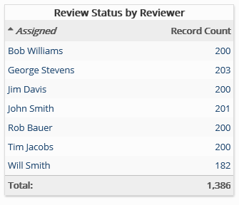

This report includes review status of documents in a particular batch, sorted by assigned reviewers. Tag details may also be included if configured by your administrator.
Complete the following selections:
Report Title: A report title is selected by default; change the title if needed.
Review Pass: Select the review pass of interest.
